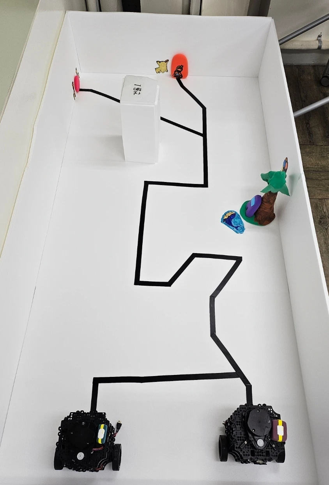
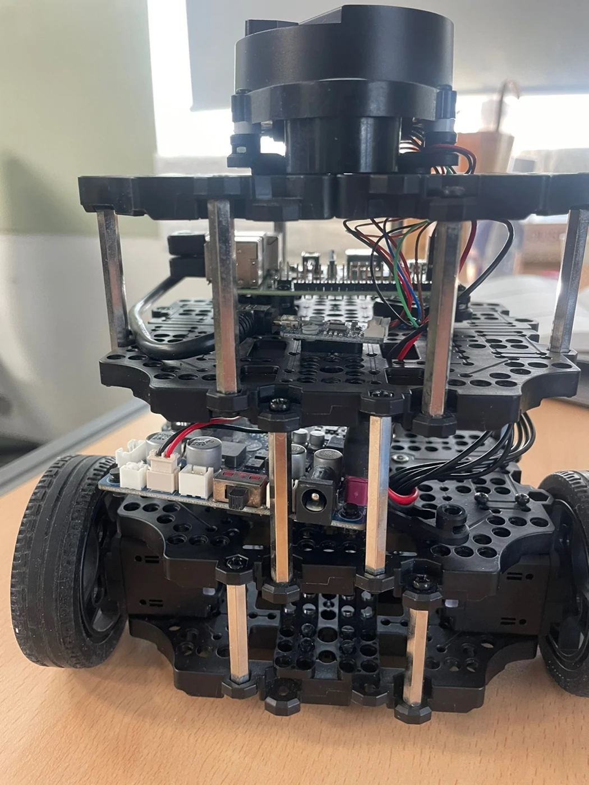
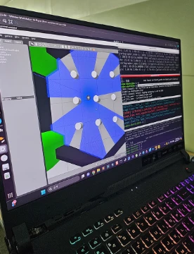
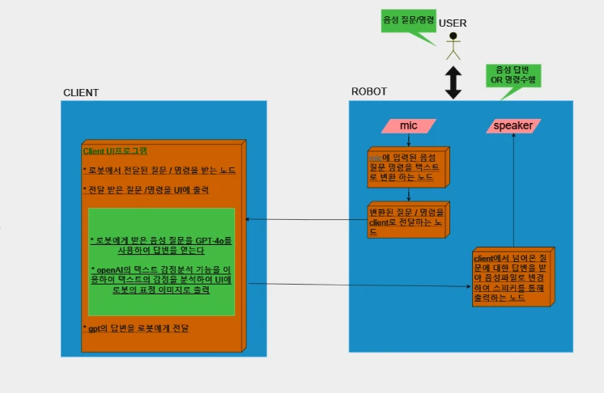
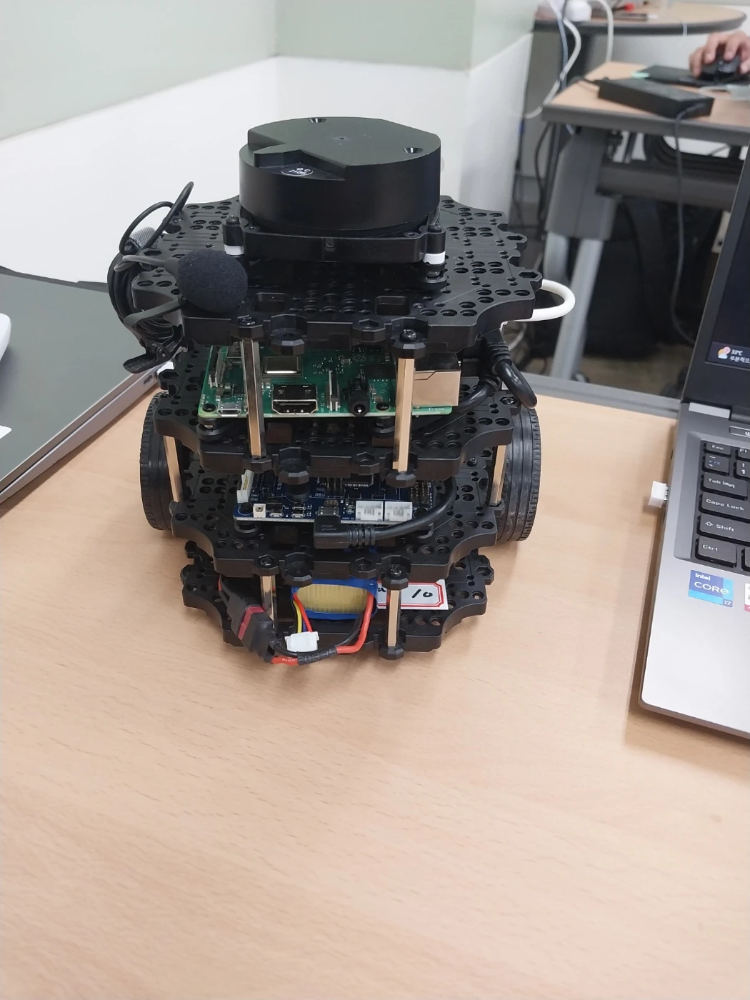

WORK EXPERIENCE / ROS2 2024
로봇의 이동에,
다섯 가지 연결을 더하다
2024년 미래내일 일경험에서 다섯 팀이 시도한 ROS2 프로젝트. 목적지 데이터, 멀티 로봇, 온도 신호, 상태 표시와 음성 대화를 연결한 개발 과정과 멘토링을 담았습니다.
움직이는 로봇에서
연결되는 시스템으로
목적지를 데이터로 저장하고, 여러 로봇을 구분하고, 센서와 음성 입력을 동작으로 이어 봅니다. 다섯 팀은 ROS2 주행 플랫폼을 출발점으로 서로 다른 시스템을 구성했습니다. 팀별 결과보고서와 멘토활동 기록을 바탕으로 무엇을 만들고 어디에서 막혔는지 살펴봅니다.

크게 보기 ↗로스경험자들 팀 결과보고서의 실물 주행 공간. 각 팀의 결과물은 교육생이 기획·개발했으며, 최수길은 프로젝트 멘토링에 참여했습니다.
- 프로젝트 기간
- 2024년 7월 18일~8월 14일
멘토활동결과보고서 기준 - 다섯 팀의 주제
- 데이터·멀티 로봇·센서
상태 표시·음성 대화 - 참여 역할
- 프로젝트 관리·기술 지원 · 최수길
기획·개발·결과물 · 교육생 팀
ASCII / ROS2 PROJECT
목적지 좌표를 데이터로 다루기
미래내일 일경험 · ASCII 팀
ASCII는 로봇을 지정된 장소로 이동시키는 일에서 출발했습니다. 키보드로 이동과 속도를 제어하고, SLAM으로 지도를 만들며, 목적지 좌표를 MariaDB에 저장해 활용하는 구조를 구상했습니다. 이동을 한 번 실행하는 데서 나아가 목적지를 데이터로 관리하려는 시도입니다.
보고서에는 Apache·PHP·MariaDB를 이용한 서버 구성과 ROS2 연동 방향이 담겨 있습니다. 멘토 피드백도 웨이포인트를 데이터베이스에 저장한 접근을 평가했습니다. 다만 도전과제에는 시간 부족으로 웹·DB 연동을 마치지 못했다고 적혀 있어, 웹에서 요청한 목적지까지 자동으로 이어지는 전체 시스템의 완성으로 설명하지 않습니다.

크게 보기 ↗ASCII 결과보고서의 실물 기체. 기본 주행과 지도 작성, 목적지 데이터 활용을 실습한 플랫폼입니다.
- 기본 이동·속도 제어
- SLAM으로 지도 작성
- 목적지 좌표 저장 설계
- 웹·DB 연동 시도
구현하며 마주한 문제
하드웨어와 일정의 제약으로 웹·데이터베이스 통합과 OpenCV 객체 인식까지 모두 구현하기는 어려웠습니다. 결과 요약과 도전과제의 설명이 달라, 기본 주행과 데이터 설계 경험을 중심으로 범위를 정리했습니다.
결과에서 읽을 수 있는 것
로봇의 목적지를 다시 사용할 수 있는 데이터로 바라본 점이 특징입니다. 멘토는 이후 이동 경로 데이터를 활용해 서비스를 확장하는 방향을 제안했습니다.
로스경험자들 / ROS2 PROJECT
여러 로봇이 같은 공간에서 움직이려면
미래내일 일경험 · 로스경험자들 팀
로스경험자들은 한 대의 로봇 제어를 여러 대의 협업으로 확장했습니다. 각 로봇을 네임스페이스로 구분하고, 중앙에서 명령을 전달하며, Nav2를 활용해 이동 경로를 다루는 멀티 로봇 프로젝트입니다. 여러 로봇이 동시에 동작하려면 주행 알고리즘뿐 아니라 서로를 구분하고 데이터를 전달하는 통신 구조가 필요했습니다.
결과보고서에는 실물 로봇을 배치한 주행 공간과 시뮬레이션 화면이 함께 남아 있습니다. 팀은 ROS2의 DDS 통신을 조정하면서 연결이 불안정하거나 응답이 늦어지는 문제를 다뤘습니다. 실물 실습과 시뮬레이션은 각각의 개발 장면으로 소개합니다.

크게 보기 ↗결과보고서의 시뮬레이션 화면. 실물 주행 사진과 구분해 수록했습니다.
- 로봇별 네임스페이스 구분
- 명령과 상태 전달
- 각 로봇의 경로 처리
- 통신 설정·주행 점검
구현하며 마주한 문제
공유기 교체와 FastRTPS 설정 조정 등 네트워크 구성을 바꿔 가며 통신 문제에 접근했습니다. 여러 로봇을 연결하는 과정에서 발견·연결 설정이 실제 동작에 영향을 준다는 점을 경험했습니다.
결과에서 읽을 수 있는 것
여러 로봇을 구분하고 통신·주행을 함께 다룬 개발 기록입니다. 생산성 향상이나 충돌 회피 성능을 정량 검증한 결과는 제시하지 않습니다.
소수지승 / ROS2 PROJECT
온도 신호를 로봇의 출발 조건으로
미래내일 일경험 · 소수지승 팀
소수지승은 온도 제어 보드와 TurtleBot3의 이동을 연결했습니다. 고추건조기 컨트롤 보드의 온도가 50°C에 도달하면 Bluetooth로 신호를 전달하고, 로봇이 미로를 빠져나가는 흐름을 다뤘습니다. 센서의 상태가 로봇의 작업을 시작하는 조건이 되는 실습입니다.
팀은 컨트롤 보드 개발, Bluetooth 통신, TurtleBot3 조립과 지도 작성, 미로 이동 기능으로 일을 나누었습니다. Cartographer와 내비게이션을 다루는 소프트웨어 작업에 회로 구성과 로봇 조립이 더해졌습니다. 보고서에는 블루투스 통신 연동 테스트까지 수행 일정으로 기록되어 있습니다.
- 온도 조건 확인
- Bluetooth 신호 전달
- 지도와 위치 확인
- 미로 이동 실습
구현하며 마주한 문제
잘못 연결한 부품과 배선을 회로도에 맞춰 다시 구성하고, 설치 과정에서 사라진 설정 파일을 복구했습니다. 로봇 조립과 원격 접속 설정도 다시 확인하면서 하드웨어·소프트웨어 양쪽의 오류를 해결했습니다.
결과에서 읽을 수 있는 것
센서 입력부터 통신, 로봇 동작까지 연결하는 과정이 핵심입니다. 결과보고서에 기록된 시제품 실습으로 소개하며, 실제 농업 현장용 자동화 설비나 건조 성능 검증으로 확대하지 않습니다.
킹왕짱 / ROS2 PROJECT
주행 명령과 상태 표시를 함께 다루기
미래내일 일경험 · 킹왕짱 팀
킹왕짱은 웨이포인트를 따라 움직이는 로봇과 LED 상태 표시를 함께 다뤘습니다. 이동 명령을 보내는 동안에도 진행 상황을 처리하고 하드웨어의 상태를 바꿀 수 있도록, ROS2 액션과 Raspberry Pi GPIO를 연결한 프로젝트입니다.
결과보고서는 rclcpp_action을 사용한 비동기 이동 제어, tf2를 통한 위치·방향 처리, GPIO를 이용한 LED 제어를 설명합니다. 명령을 전송하는 순간뿐 아니라 로봇이 이동하는 동안의 피드백과 주변 장치의 동작을 함께 고려한 점이 특징입니다.
- 이동 목표 전달
- 진행 피드백 처리
- 위치·방향 확인
- GPIO로 상태 표시
구현하며 마주한 문제
ROS2와 실제 하드웨어를 연결하면서 GPIO 제어의 안정성을 확인해야 했습니다. 팀은 비동기 액션 제어를 적용하고 반복적인 테스트와 디버깅을 수행했다고 기록했습니다.
결과에서 읽을 수 있는 것
주행 명령과 주변 장치 제어를 결합한 경험을 중심으로 정리했습니다. 원본 보고서의 결과 이미지 항목은 비어 있어, 다른 팀의 기체 사진으로 대체하지 않았습니다.
미래내일청년 / ROS2 PROJECT
말을 듣고 답하는 로봇 만들기
미래내일 일경험 · 미래내일청년 팀
미래내일청년은 TurtleBot에 음성 대화 기능을 더했습니다. 마이크로 입력한 말을 텍스트로 바꾸고, 답변을 생성한 뒤 음성으로 재생하는 흐름입니다. 2024년 결과보고서는 Whisper, GPT-4o, TTS를 이용한 구성과 PyQt 화면을 설명합니다.
팀은 대화 처리와 로봇 측 입출력의 역할을 나누고, 응답 문장의 감정 분류를 화면 표현에 연결하는 구조로 발전시켰습니다. 여기서 감정 분류는 응답 텍스트를 다루는 기능입니다. 사람의 실제 감정이나 건강 상태를 측정하는 기능으로 해석하지 않습니다.

크게 보기 ↗결과보고서에 수록된 변경 후 구성도. 클라이언트와 로봇의 역할, 대화와 화면 표현의 연결을 보여 줍니다.

크게 보기 ↗같은 팀의 결과보고서에 수록된 기체. 음성 입출력을 로봇 플랫폼과 결합한 개발 기록입니다.
- 마이크 음성 입력
- 음성을 텍스트로 변환
- 응답 생성·화면 표현
- 음성으로 답변 재생
구현하며 마주한 문제
외부 API 설정과 실행 환경을 맞추는 과정에서 오류를 해결했습니다. 기능을 나누고 데이터를 주고받는 구조를 정리하면서 음성 입력부터 출력까지의 연결을 다뤘습니다.
결과에서 읽을 수 있는 것
면접·주방·검색 등 맞춤 모드는 보고서에서 추가 구현 의향으로 제시했습니다. 완성 기능과 향후 아이디어를 구분하고, 돌봄이나 정서 개선 효과를 검증된 성과로 제시하지 않습니다.
연결한 만큼, 확인할 것도 늘어납니다
로봇과 데이터베이스 사이에는 통신이, 센서와 동작 사이에는 조건과 신호가, 음성과 응답 사이에는 여러 처리 단계가 놓입니다. 다섯 팀의 기록은 기능을 늘리는 일과 함께 연결 지점의 문제를 확인하는 일이 중요했음을 보여 줍니다.
프로젝트 기간은 팀별 멘토활동결과보고서의 2024년 7월 18일~8월 14일을 기준으로 정리했습니다. 결과보고서의 참여기업은 주식회사 포휴먼테크이며, 최수길은 프로젝트 관리와 ROS2·OpenCV 기술 지원에 참여했습니다. 아래 저장소는 관련 수업 기록으로, 다섯 팀의 완성 소스 전체를 제공하는 저장소는 아닙니다.